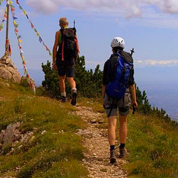
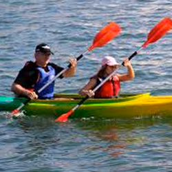
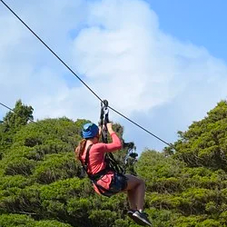

Are you ready to embark on an exhilarating journey into the heart of nature's playground? Look no further than Adventureland Outdoor Park, where the thrill of the outdoors meets your thirst for adventure. Nestled in the breathtaking beauty of [Location], our park offers an unrivaled opportunity to experience the rush of kayaking, the excitement of zip lining, the challenge of rock climbing, and the serenity of swimming—all in one remarkable destination.
  At Adventureland, adventure knows no bounds. Whether you're a seasoned outdoor enthusiast or a first-time explorer, our park is designed to cater to all levels of adventurers. Strap on a life vest and paddle through the crystal-clear waters of our pristine lakes, mastering the art of kayaking while immersing yourself in the tranquility of nature.
Are you ready to defy gravity? Take flight on our exhilarating zip line courses, where you'll zoom through the treetops, experiencing a rush of adrenaline unlike any other. Our certified guides will ensure your safety while you focus on the breathtaking views that only Adventureland can provide.
For those who crave a challenge, Adventureland offers a variety of rock climbing terrains suitable for all skill levels. Scale the heights of our natural rock formations while soaking in panoramic vistas that will leave you breathless. Our expert instructors will guide you every step of the way, making your ascent both thrilling and safe.
When it's time to unwind and cool off, our pristine swimming areas beckon. Dip into the invigorating waters and relax as you float beneath the open sky. Adventureland's lakes are not just for swimming; they're your oasis of calm amid the excitement.
Adventureland Outdoor Park is your gateway to unforgettable outdoor experiences. Whether you seek thrills or serenity, we have it all. Visit us and discover the adventurer within you. Book your adventure today and be prepared to create memories that will last a lifetime at Adventureland Outdoor Park.